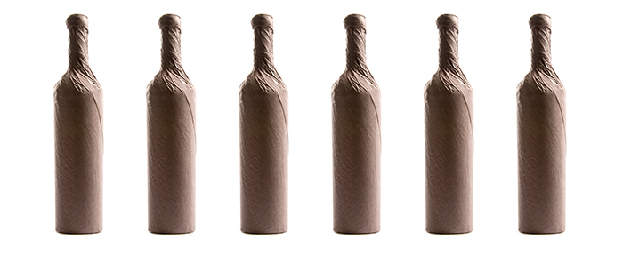

A Chardonnay for Every Palate
Take this quiz to find your perfect chardonnay

1. Which of the following best describes your personality?
- Sweet
- Mysterious
- Optimistic
- Skeptical
- Loving
2. Pick one animal from the list below.
- Dog
- Cat
- Horse
- Raccoon
- Whale
3. Where is your ideal vacation spot?
- Tropical beach
- Moutains
- Big city
- My couch
- Space
4. Would you rather...
- ...live on a secluded island
- ...win the lottery
- ...solve world hunger
- ...eat whatever you want without gaining weight
- ...be able to fly
5. What is your current opinion of chardonnay?
- I love it! It's the only wine for me
- I enjoy some chardonnays, but it's not my go-to wine
- Meh, I'll drink it as a last resort
- Chardonnay is only for bored suburban housewives